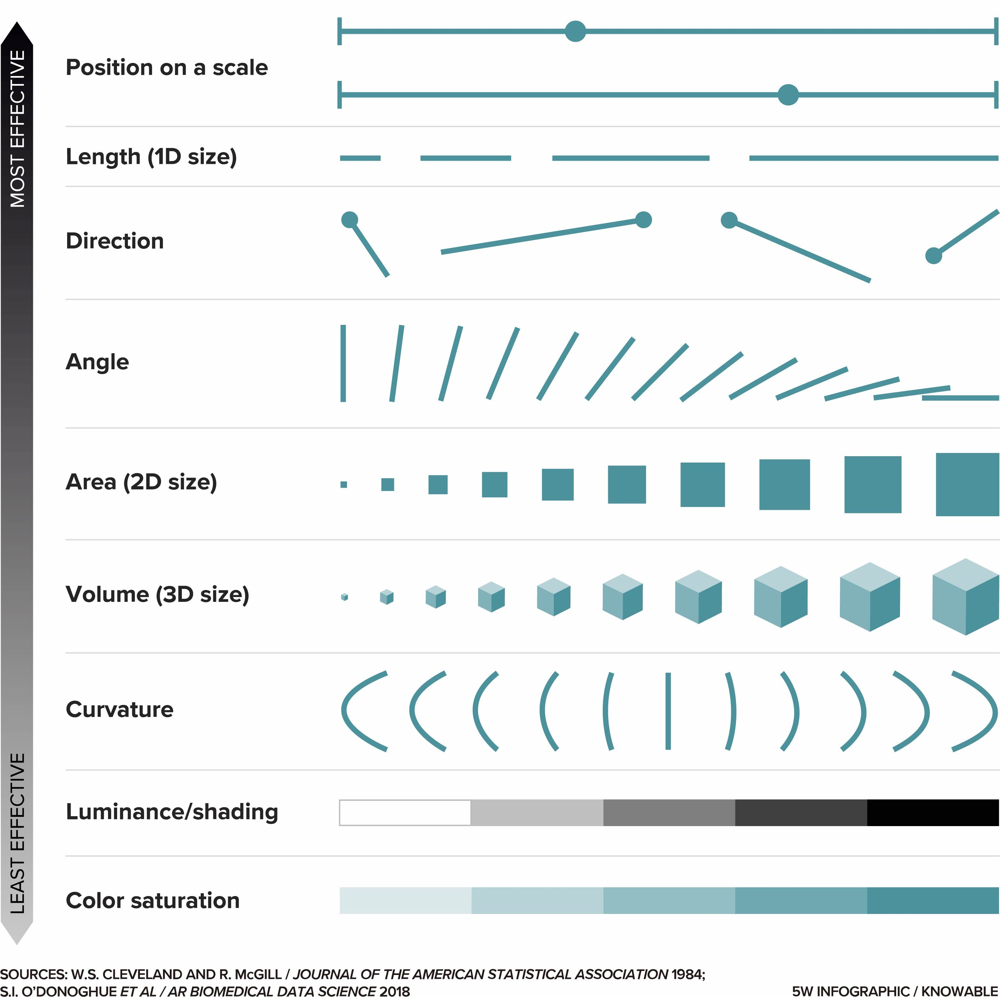

WTF Re: Data Visualization
Heidi Steiner
Spring 2023
Today’s Map
Why visualize?
Limitations
Types of Visualizations
Tools + tips + takeaways

Why visualize?
Discover patterns that may not be obvious from numerical summaries
For Example…
| dataset | n | Average x | Average y |
|---|---|---|---|
| Dataset 1 | 142 | 54.3 | 47.8 |
| Dataset 2 | 142 | 54.3 | 47.8 |
| Dataset 3 | 142 | 54.3 | 47.8 |
| Dataset 4 | 142 | 54.3 | 47.8 |
| Dataset 5 | 142 | 54.3 | 47.8 |
| Dataset 6 | 142 | 54.3 | 47.8 |
| Dataset 7 | 142 | 54.3 | 47.8 |
| Dataset 8 | 142 | 54.3 | 47.8 |
| Dataset 9 | 142 | 54.3 | 47.8 |
| Dataset 10 | 142 | 54.3 | 47.8 |
| Dataset 11 | 142 | 54.3 | 47.8 |
| Dataset 12 | 142 | 54.3 | 47.8 |
| Dataset 13 | 142 | 54.3 | 47.8 |
More summary statistics…
How, if at all, are these 13 datasets different from each other?
| dataset | n | Average x | Average y | St Dev x | St Dev y |
|---|---|---|---|---|---|
| Dataset 1 | 142 | 54.3 | 47.8 | 16.8 | 26.9 |
| Dataset 2 | 142 | 54.3 | 47.8 | 16.8 | 26.9 |
| Dataset 3 | 142 | 54.3 | 47.8 | 16.8 | 26.9 |
| Dataset 4 | 142 | 54.3 | 47.8 | 16.8 | 26.9 |
| Dataset 5 | 142 | 54.3 | 47.8 | 16.8 | 26.9 |
| Dataset 6 | 142 | 54.3 | 47.8 | 16.8 | 26.9 |
| Dataset 7 | 142 | 54.3 | 47.8 | 16.8 | 26.9 |
| Dataset 8 | 142 | 54.3 | 47.8 | 16.8 | 26.9 |
| Dataset 9 | 142 | 54.3 | 47.8 | 16.8 | 26.9 |
| Dataset 10 | 142 | 54.3 | 47.8 | 16.8 | 26.9 |
| Dataset 11 | 142 | 54.3 | 47.8 | 16.8 | 26.9 |
| Dataset 12 | 142 | 54.3 | 47.8 | 16.8 | 26.9 |
| Dataset 13 | 142 | 54.3 | 47.8 | 16.8 | 26.9 |
Even more stats…
| dataset | n | Average x | Average y | St Dev x | St Dev y | Correlation |
|---|---|---|---|---|---|---|
| Dataset 1 | 142 | 54.3 | 47.8 | 16.8 | 26.9 | -0.1 |
| Dataset 2 | 142 | 54.3 | 47.8 | 16.8 | 26.9 | -0.1 |
| Dataset 3 | 142 | 54.3 | 47.8 | 16.8 | 26.9 | -0.1 |
| Dataset 4 | 142 | 54.3 | 47.8 | 16.8 | 26.9 | -0.1 |
| Dataset 5 | 142 | 54.3 | 47.8 | 16.8 | 26.9 | -0.1 |
| Dataset 6 | 142 | 54.3 | 47.8 | 16.8 | 26.9 | -0.1 |
| Dataset 7 | 142 | 54.3 | 47.8 | 16.8 | 26.9 | -0.1 |
| Dataset 8 | 142 | 54.3 | 47.8 | 16.8 | 26.9 | -0.1 |
| Dataset 9 | 142 | 54.3 | 47.8 | 16.8 | 26.9 | -0.1 |
| Dataset 10 | 142 | 54.3 | 47.8 | 16.8 | 26.9 | -0.1 |
| Dataset 11 | 142 | 54.3 | 47.8 | 16.8 | 26.9 | -0.1 |
| Dataset 12 | 142 | 54.3 | 47.8 | 16.8 | 26.9 | -0.1 |
| Dataset 13 | 142 | 54.3 | 47.8 | 16.8 | 26.9 | -0.1 |
Hidden patterns!
EDA Tools
Software for Exploratory Data Analysis & Beyond
MS Excel, LibreOffice - Calc
R (e.g. ggplot2) and Python (e.g. seaborn)
Why visualize?
Convey information in a way that is otherwise difficult/impossible to describe
Source: [Financial Times](https://www.ft.com/content/a2901ce8-5eb7-4633-b89c-cbdf5b386938), 27 Aug 2021.
Major Data Viz Limitations
Computational
Do you have the compute power to visualize every data point? Probably not…
Do you need a graphics processing unit?
Do you know how to utilize your lab’s GPU?
Coordinate
Forget putting all your great insights into one figure!
Cognitive Limitations
Ranking of visual communication channels
 length >direction > angles >area > volume >curvature > shading >color saturation">
Cognitive Limitations: Distance
Principle of Proportional Ink
For example:

Cognitive Limitations: Color
Lisa Charlotte Muth. What to consider when choosing colors for data visualization. Datawrapper. Published May 29, 2018. Accessed November 7, 2022. https://blog.datawrapper.de/colors/
Cognitive Limitations: Color
Lisa Charlotte Muth. What to consider when choosing colors for data visualization. Datawrapper. Published May 29, 2018. Accessed November 7, 2022. https://blog.datawrapper.de/colors/
Cognivite Limitations: Clutter
Wilke CO. Fundamentals of Data Visualization. Accessed November 7, 2022. https://clauswilke.com/dataviz/image-file-formats.html
Cognivite Limitations: Clutter

Wilke CO. Fundamentals of Data Visualization. Accessed November 7, 2022. https://clauswilke.com/dataviz/image-file-formats.html
Cognitive Limitations
Often the same visualization won’t work for every audience…
#SciComm
#SciComm
Graphical Abstracts
Infographics
#SciComm

#SciComm Tools
Extra Data Viz Tools
InkSkape
JavaScript
Is there a field specific tool you might utilize?
Data are not neutral.
It’s easy to make a “bad” plot.
Bad Plots
Taste
Data
Perception
Bad Plots: Data

Bad Plots: Data

Data Viz Ethics
It is not good enough to commit to not misleading your audience.
Data Viz Ethics

Extra Thoughts: Exporting
| Acronym | Name | Type | Application |
|---|---|---|---|
| Portable Document Format | vector | general purpose | |
| eps | Encapsulated PostScript | vector | general purpose, outdated; use pdf |
| svg | Scalable Vector Graphics | vector | online use |
| png | Portable Network Graphics | bitmap | optimized for line drawings |
| jpeg | Joint Photographic Experts Group | bitmap | optimized for photographic images |
| tiff | Tagged Image File Format | bitmap | print production, accurate color reproduction |
| raw | Raw Image File | bitmap | digital photography, needs post-processing |
| gif | Graphics Interchange Format | bitmap | outdated for static figures, Ok for animations |
Vector graphics redrawn “on the fly” vs bitmap always bitmap
Bitmap Compression (to keep file sizes small)
Lossless = pixel-for-pixel identical
Lossy = accepts some image degradation in return for smaller file sizes
- great for photos, can’t make lines
Rule of Thumb: Store visualization in maximum resolution format, copy at lower resolutions when necessary
Extra Thoughts: Text
- Is your font readable at the smallest printed size?
- Do you need to left align?

Extra Thoughts: Accessibility
Check that your plots are color blind friendly
Add alt-text to #scicomm
Questions?